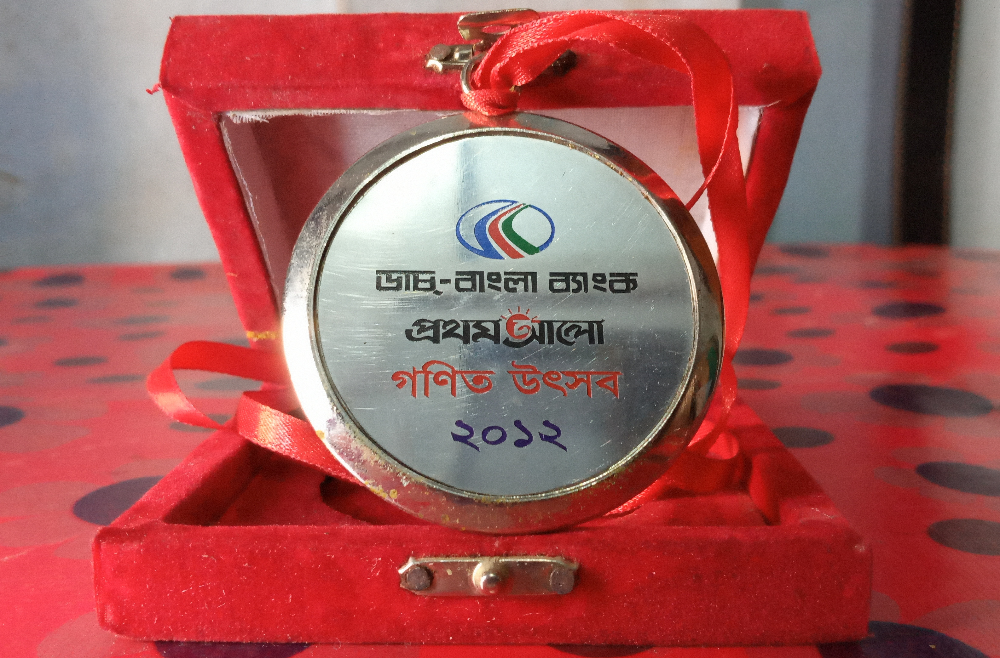
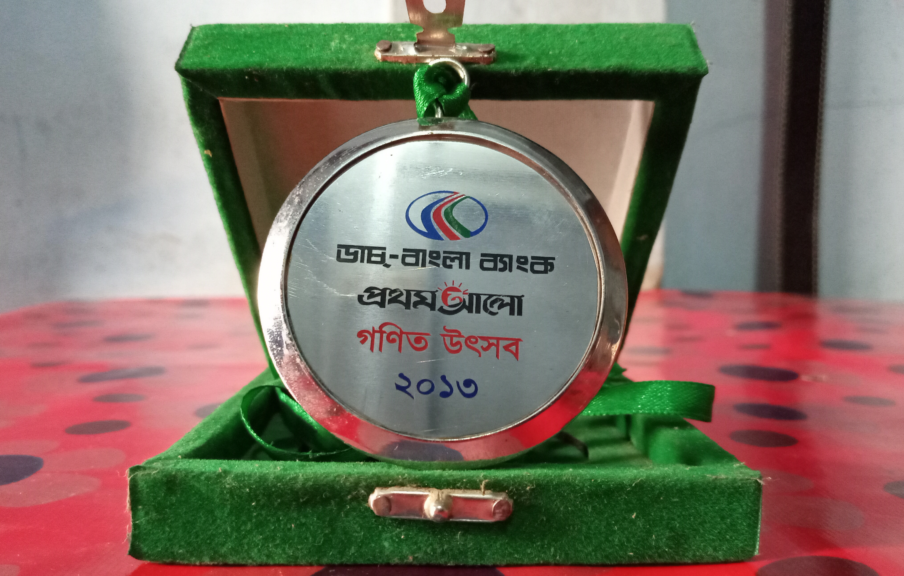
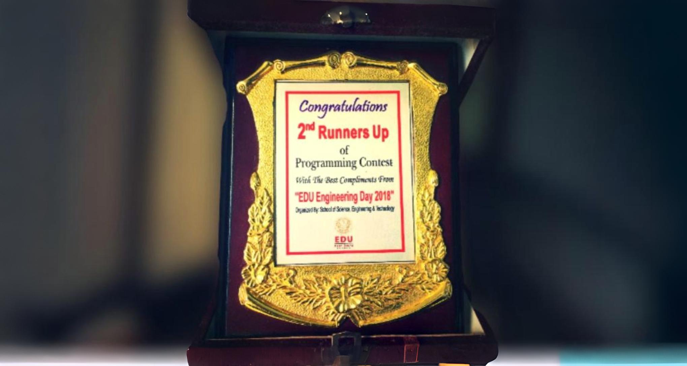
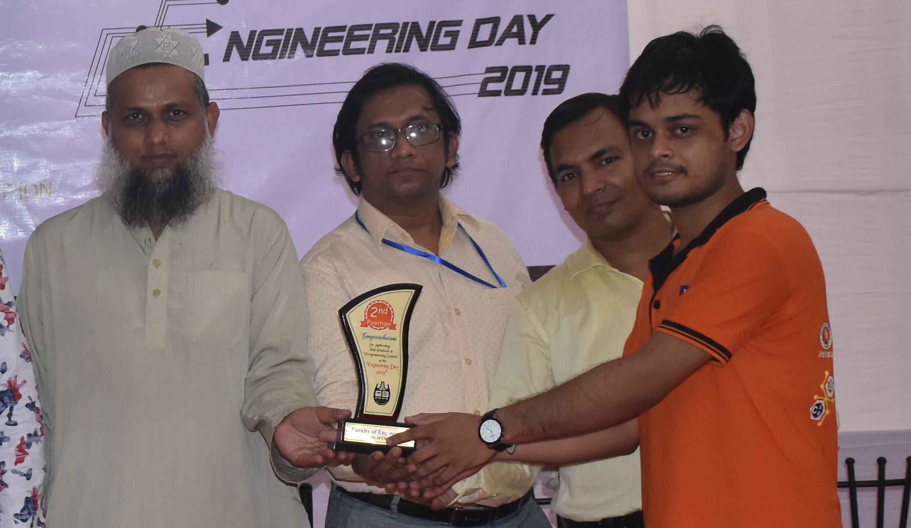
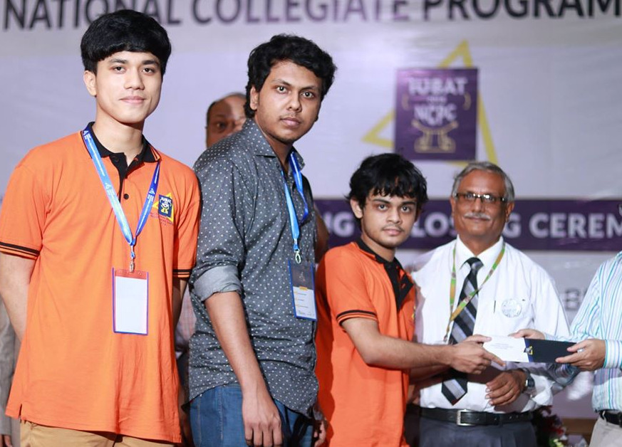

Anik Dey Shaon
Programmer with a heart for adventure and a love for deep conversations
"By all means marry; if you get a good partner, you'll be happy; if you get a bad one, you'll become a philosopher."
— Socrates
My Journey
2012: Won my first Math Olympiad—celebrated with tea and too much cake.
2020: Graduated with a B.Sc.—learned coding is easier than adulting.
The Basics
Date of Birth: 30 May, 1995 (Old enough to know better, young enough to do it anyway)
Height: 5'3" (Perfect for reaching the bottom shelf without bending)
Address: Baroigram, Barlekha, Moulvibazar, Bangladesh (Where the WiFi is decent and the tea is excellent)
Academic Adventures
- S.S.C: 2012, P.C High School (A place I learned numbers and the art of lifelong friendships.)
- H.S.C: 2014, Barlekha Degree College (When I thought college would be like in the movies. It wasn't.)
- B.Sc. (Engg.): 2020, Computer Science & Engineering, University of Chittagong (Four years of turning tea into code)
- IELTS: Overall 8.0 (No band less than 7.0) (My English is better than my understanding of humans)
View Certificate
- Upcoming: Will appear in 44th BCS Viva (Wish me luck or send tea)
Trophy Cabinet
Times when my parents' investment in my education actually paid off:

Champion, Secondary Category, Sylhet Division, Bangladesh Mathematical Olympiad, 2012
View Certificate

1st Runner-Up, Higher Secondary Category, Sylhet Division, Bangladesh Mathematical Olympiad, 2013
View Certificate

2nd Runner-Up, EDU Engineering Day Programming Contest, 2018

Runner-Up, CU Engineering Day Programming Contest, 2019

Champion, Chittagong Division, National Collegiate Programming Contest (NCPC), 2018
Favorites
- Book: The Alchemist — inspires me to chase dreams.
- Place: Baroigram — where tea tastes like home.
The People Who Have To Put Up With Me
Father: Ajit Kumar Dey (Businessman, A man of action, not words, in business and beyond.)
Mother: Swapna Rani Datta (Housewife, Expert at finding things I swear weren't there a minute ago)
Siblings:
- Choiti Dey Shakhi - Completed B.Sc. in Mathematics, MC College
- Anirdan Dey Sagor - 2nd Year, B.Sc. in Statistics, MC College
Notable Relatives:
- Polash Ranjan Dey (Cousin) - Additional Police Super, Bangladesh Police (A useful contact in case I ever get into trouble.)
- Aditi Dey Tithi (Cousin) - Assistant Researcher, Rensselaer Polytechnic Institute, New York, USA (The visionary who made her escape Bangladesh before we even knew we should.)
What I Do When I'm Not Working
When I'm not solving complex algorithms or debugging my life choices, you can find me:
- Coding: Writing code that finds problems before you do.
- Playing Chess: Strategizing my next move in life, one pawn at a time.
Peak Lichess blitz rating: 1446 (View Profile)
- Reading Books: From sci-fi to philosophy—escaping reality one page at a time.